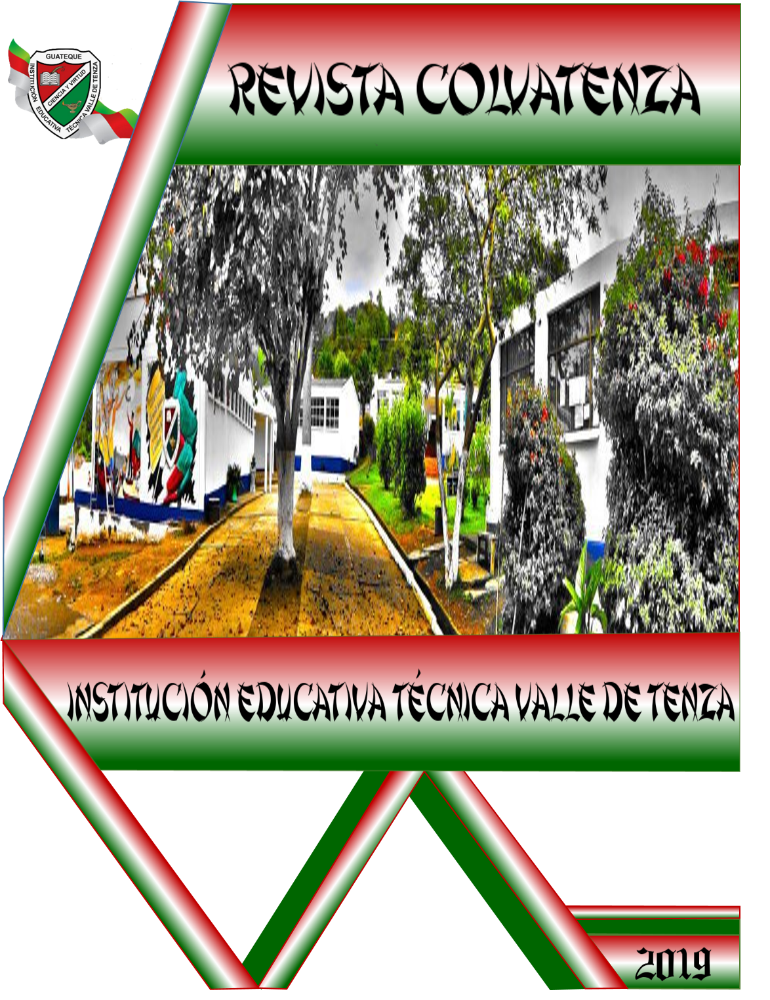

INSTITUCIÓN EDUCATIVA TÉCNICA VALLE DE TENZA REVISTA COLVATENZA La Revista Colvatenza ha sido incorporada por las estudiantes Lisbeth Alexandra Albino y Luisa Santos de la Especialidad de Diseño e Integración de Multimedia, se pretende informar y mostrar diversas temáticas de la institución.  |